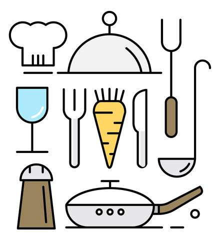

Alfajores cordobeses
Con esta simple receta podés hacer unas 3 docenas de alfajorcitos cordobeses. ¡Manos a la obra!
Ingredientes
- 500 g harina 0000
- 400 g dulce de leche
- 150 g azúcar impalpable
- 120 g margarina
- 3 huevos
- 10 g polvo para hornear
- 10 g bicarbonato de amonio
- 15 g extracto de malta
- 50 g miel
Para el glaseado
- 400 g azúcar impalpable
- agua
- jugo de limón
Preparación
- Precalentar el horno a fuego mínimo
- Tamizar harina, polvo de hornear y bicarbonato de amonio
- Cremar margarina y azúcar impalpable. Luego agregar los huevos, miel y extracto de malta
- Hacer una corona con los ingredientes secos y colocar dentro los fluídos. UNIR SIN AMASAR. Esto último es clave para que la masa de las tapitas no desarrolle gluten y no queden gomosos. Se puede usar un cornet o espátula hasta integrar todo.
- Dejar descansar la masa en la heladera por 20 minutos
- Cortar las tapitas con cortante redondo (puede ser de 7 cm de diámetro) y 3 mm de espesor. Siempre que queden restos de masa, unirlos aplastando, sin amasar y volviendo a estirar con el palote. Lo ideal es usar el palo de mármol
- Hornear cada tanda de masitas por 7 minutos. Deben salir claritas, no doradas
- Enfriar y armar los alfajores colocando un pompón de dulce de leche con manga o una cucharadita de dulce de fruta en el centro de una de las tapitas y aplastando suavemente (siempre tomándolas desde el centro para que quede parejo)
Para el glaseado
- Formar un glaseado con el azúcar impalpable al que se le agregar de a poquito agua tibia (nunca a más de 45 grados) y jugo de limón. Recordar colocar el agua sobre el azúcar y no al revés, mezclando bien, porque el azúcar absorve mucha agua y rápidamente se forma la pasta. La consistencia debe ser flexible pero espesa, no transparente
- Introducir los alfajores dentro de la mezcla y con ayuda de un tenedor cubrirlos completamente.
- Dejar secar sobre papel sulfito o una rejilla. No demoran mucho, pero si hay apuro se les puede poner un ventilador para que les de aire fresco.
Mapa de Córdoba
Fábrica de alfajores en Calamuchita
...de Córdoba son mis tres amores:
mujeres, cuartetazo y alfajores ♫